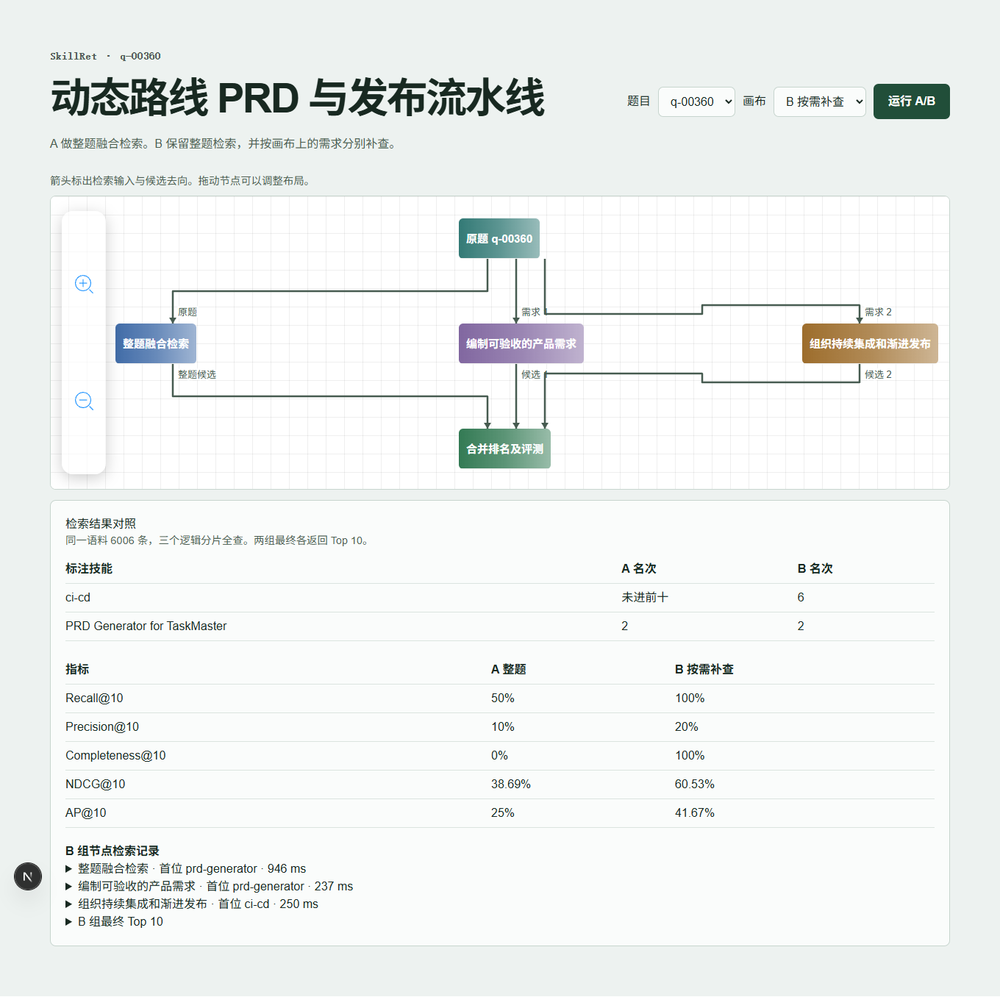

q-00360 动态路线 PRD 与发布流水线
ci-cd 在发布流水线分支排第 1，最终排第 6。原先命中的 PRD 工具保持第 2。
A/B 指标
| 指标 | A 整题 | B 按需求补查 |
|---|
| Recall@10 | 50.00% | 100.00% |
| Precision@10 | 10.00% | 20.00% |
| Completeness@10 | 0.00% | 100.00% |
| NDCG@10 | 38.69% | 60.53% |
| AP@10 | 25.00% | 41.67% |
数据集标注技能的名次
| 标注技能 | A | B |
|---|
| ci-cd | 未进前十 | 6 |
| PRD Generator for TaskMaster | 2 | 2 |
原题与 B 组各节点
整题融合检索
Our platform "FreightPulse" is a logistics SaaS for last-mile delivery optimization. We're about to kick off a major new feature — dynamic route recalculation with real-time traffic ingestion — and I need two things done together. First, generate a full PRD for this feature that covers the real-time traffic data pipeline, the route optimization engine (using OSRM), driver mobile app integration, and a dispatcher dashboard. Make sure it's structured for automated task breakdown with clear milestones and acceptance criteria, and run all your validation checks against it. If there's already a PRD in our repo at `docs/prd/`, detect it and let me know whether we should update or replace. Second, I need you to set up our entire CI/CD pipeline from scratch — we're on GitHub Actions with a monorepo (Rust backend, React frontend, Flutter mobile). I need: a test gate that blocks merges unless unit + integration tests pass, Trivy container scanning on every PR, Docker image builds pushed to ECR with semantic version tags, and a deployment workflow that does blue-green deploys to our EKS staging cluster on merge to `develop` and canary deploys to production on release tags with automatic rollback if error rates exceed 2%. The PRD should include the CI/CD requirements as a dedicated section so tasks can be generated for pipeline work too. Once the PRD passes validation, hand it off for task breakdown and give me the full task list with datetime estimates.
- prd-generator
- PRD Generator for TaskMaster
- ring:pre-dev-prd-creation
- ralph-tui-prd
- bmad-prd
- create-prd
- pre-dev-prd-creation
- prd-management
- vibe-prd
- prd-facilitator
编制可验收的产品需求
Write or update a PRD for dynamic logistics route recalculation with live traffic ingestion, an OSRM engine, a driver app, and a dispatcher dashboard. Define milestone acceptance criteria, validate the PRD, and break it into estimated tasks.
- prd-generator
- PRD Generator for TaskMaster
- prd-maker
- vibe-prd
- ring:pre-dev-prd-creation
- pre-dev-prd-creation
- bmad-prd
- create-prd
- prd-management
- prd-facilitator
组织持续集成和渐进发布
Design GitHub Actions for a Rust, React and Flutter monorepo with unit and integration test gates, Trivy PR scans, semantic Docker tags in ECR, blue-green EKS staging deployments, and canary production releases with error-rate rollback.
- ci-cd
- deployment-automation
- devops-expert
- deployment-manager
- devops-automator
- devops-engineer
- github-actions
- ci-cd-devops
- ci-cd-reviewer
- ci-cd-practices
最终候选
A Top 10
- prd-generator
- PRD Generator for TaskMaster
- ring:pre-dev-prd-creation
- ralph-tui-prd
- bmad-prd
- create-prd
- pre-dev-prd-creation
- prd-management
- vibe-prd
- prd-facilitator
B Top 10
- prd-generator
- PRD Generator for TaskMaster
- ring:pre-dev-prd-creation
- prd-maker
- vibe-prd
- ci-cd
- deployment-automation
- ralph-tui-prd
- bmad-prd
- create-prd
RSI 实测截图
